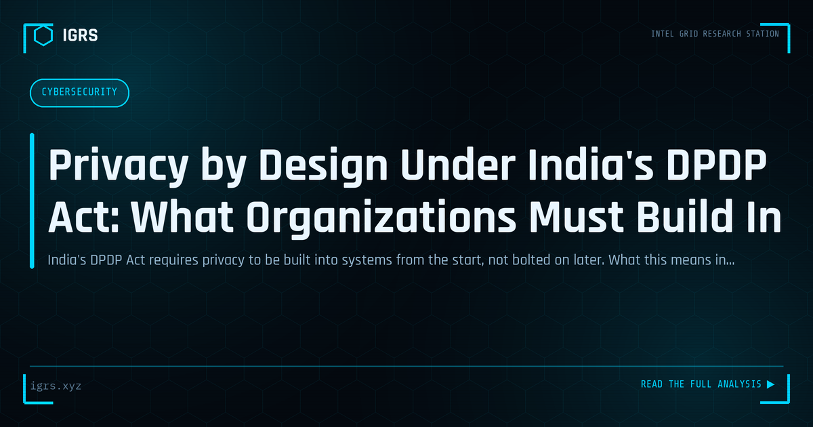

Privacy by Design Under India's DPDP Act: What Organizations Must Build In
| File No. | IGRS-061/2026 |
| Subject | Implementation guide for Privacy by Design under India's Digital Personal Data Protection Act 2023 |
| Category | Law & Evidence |
| Author | Manuj Kumar Pandey |
| Published | 2026-06-07 |
| Reading time | 12 minutes |
India's DPDP Act requires privacy to be built into systems from the start, not bolted on later. What this means in practice for Indian product teams and technology organizations.
Privacy by Design in the DPDP Era
With the DPDP Act 2026 establishing comprehensive data protection obligations, Indian organisations can no longer treat privacy as an afterthought. Privacy by Design — building privacy into systems and processes from the outset rather than bolting it on later — is both a best practice and increasingly a compliance necessity. This guide explains Privacy by Design and how Indian organisations can implement it.
What Privacy by Design Means
Privacy by Design is the principle that privacy should be embedded into the design of systems, products, and processes from the beginning. Rather than addressing privacy reactively after problems arise, it makes privacy a default consideration in every decision — what data to collect, how to store it, who can access it, and how long to keep it. This proactive approach prevents privacy problems rather than remediating them.
The Core Principles
| Principle | Application |
|---|---|
| Proactive not reactive | Prevent privacy issues by design |
| Privacy as default | Maximum privacy without user action |
| Data minimisation | Collect only what is necessary |
| End-to-end security | Protect data through its lifecycle |
| Transparency | Clear about data practices |
Data Minimisation
A cornerstone of Privacy by Design is collecting only the data genuinely needed for a purpose. Every additional piece of personal data is a liability — a target for breaches and a compliance obligation. By questioning what data is truly necessary and avoiding collection of the rest, organisations reduce both risk and regulatory burden. The DPDP Act's purpose limitation principle reinforces this: data should be collected for specified purposes, not gathered speculatively.
Purpose Limitation and Consent
The DPDP Act centres on consent and purpose limitation — personal data should be processed for the specific purposes consented to. Privacy by Design implements this by building clear consent mechanisms, processing data only for stated purposes, and avoiding scope creep where data collected for one reason is used for another. Systems designed around these principles make compliance natural rather than a constant struggle.
Security as Foundation
Privacy depends on security — data that is not secure cannot be private. Privacy by Design incorporates end-to-end security: encryption of data in transit and at rest, access controls limiting who can see personal data, and protection throughout the data lifecycle including secure deletion. The DPDP Act's requirement for reasonable security safeguards makes this both a privacy principle and a legal obligation.
Implementing in Practice
Indian organisations implement Privacy by Design by embedding privacy review into project and product development, conducting data protection impact assessments for high-risk processing, minimising data collection and retention, building consent and rights mechanisms into systems, and ensuring security throughout. Making privacy a standard part of how systems are built — rather than a compliance check at the end — is the essence of the approach.
Privacy as Advantage
For Indian organisations, Privacy by Design is both a DPDP compliance strategy and a source of trust and advantage. As individuals become more privacy-conscious and the regulatory environment more demanding, organisations that build privacy into their foundations are better positioned — facing lower breach risk, easier compliance, and greater customer trust. Rather than viewing privacy as a constraint, forward-looking organisations treat Privacy by Design as a way to build better, more trustworthy systems while meeting the obligations the DPDP Act now imposes, with its substantial penalties for non-compliance.